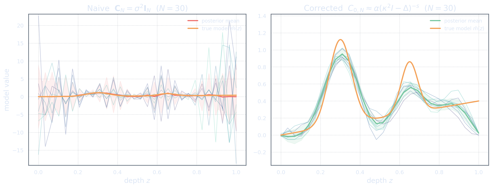
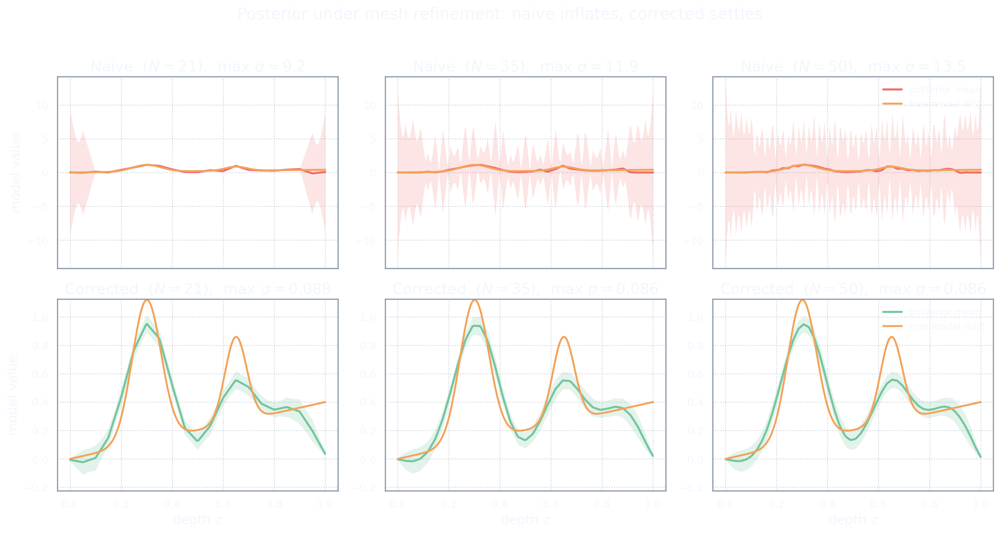

The Verdict: Same Setup, Two Formulations
Act VII said: the cure works. Act VIII says: now compare the whole story.
We arrange the exhibits side by side. Same domain, same kernels, same data, same hat basis, same forward matrix. The physical setup is unchanged; the Bayesian formulation is different. The mathematics does the rest.
This act introduces almost no new mathematics. It is a courtroom verdict: the evidence is already on the table.
F8a — Same setup, two workflows
The naive workflow starts with the mesh and invents the prior at each resolution. The corrected workflow starts with the function space and discretizes last. The diagram below shows the two pipelines in parallel.
F8b — Naive versus corrected posterior samples
Same \(N = 30\) hats, same \(N_d = 20\) data, same true model. The posterior means may look superficially similar. The posterior measures are radically different.
On the left, the naive posterior samples oscillate wildly — the cloud is uncontrolled. On the right, the corrected posterior samples stay close to the mean — the cloud is bounded by the prior.

The posterior mean can hide the pathology. The posterior samples expose it. A plot of the mean alone is not a verification of correctness.
F8c — Naive versus corrected under refinement
The most revealing experiment: refine the mesh and watch both posteriors react. The top row (naive) shows the coefficient-space variance growing as \(N\) increases; the posterior samples oscillate more and more. The bottom row (corrected) shows the posterior settling to a fixed measure.
Same \(N\), same data, in each column. Two completely different behaviours. This is the clearest demonstration of why the Bayesian formulation matters.

In the naive workflow, refinement keeps building new rooms and forgetting to install walls. In the corrected workflow, refinement sharpens the blueprint that was already there.
F8d — Same basis, different meaning
The hat functions are the same in both workflows. The forward matrix entries are the same. The data are the same. The posterior mean formula looks the same. But the mathematical meaning is different.
In the naive workflow, the coefficients are the model. In the corrected workflow, the coefficients represent a function in \(\M\). The distinction sounds philosophical until you see the samples.
| Aspect | Naive workflow | Corrected workflow |
|---|---|---|
| Basis functions | hat functions \(\phi_j\) | hat functions \(\phi_j\) (same) |
| Forward matrix | \(G_{ij} = [G\phi_j]_i\) | \(G_{ij} = [G\phi_j]_i\) (same) |
| Data | \(\obs = G\bar{m} + \noise\) | \(\obs = G\bar{m} + \noise\) (same) |
| Adjoint | \(G^{\T}\) (transpose) | \(M^{-1} G^{\T} W_D\) (geometry-aware) |
| Prior covariance | \(\sigma^2 I_N\) (invented per \(N\)) | \(C_{0,N}\) (operator matrix \(\approx C_0\)) |
| Prior trace | \(\sigma^2 N \to \infty\) | \(\Tr(C_0) < \infty\) |
| Posterior trace (coeff.) | \(\to \infty\) (diverges) | \(\leq \Tr(C_0) < \infty\) (bounded) |
| Refinement | changes the problem | approximates the same problem |
| Coefficients are | the model | a representation of the model |
The same numerical basis can either approximate a coherent function-space problem or define a sequence of unrelated finite-dimensional problems. The difference is whether the Bayesian formulation is chosen before or after discretization.
F8e — Final summary
The opening mistake was not obvious because every finite-dimensional operation looked valid. The diagonal prior was a valid covariance matrix. The posterior mean was computable. The plot looked plausible.
(For the reader who wants the verdict with proofs: the degeneration of naively discretized priors is established in [LS04], and the function-space formulation that survives refinement is developed in [Stu10].)
But the posterior samples exposed the missing structure. The prior did not have a continuous meaning. The covariance did not have bounded trace. The adjoint was treated as a transpose. Refinement changed the problem rather than improving the approximation.
The corrected formulation fixes the order:
Think first, discretize later.
More explicitly:
- Choose the model space \(\M\).
- Choose the data space \(\D\).
- Define the forward map \(G:\M\to\D\).
- Specify the noise covariance \(\Cd\).
- Choose the prior measure \(\prior=\N(m_0,C_0)\).
- Define the posterior measure \(\post\).
- Discretize the already-defined objects.
Only then do the posterior mean, covariance, samples, and refinement behaviour belong to one coherent mathematical story.
The final answer is not that matrices are bad. The final answer is that matrices should be shadows cast by mathematical objects, not the objects themselves.
References
- Matti Lassas and Samuli Siltanen (2004). “Can one use total variation prior for edge-preserving Bayesian inversion?” Inverse Problems 20(5), 1537–1563. The same verdict, proven: naive priors can change meaning under refinement. doi:10.1088/0266-5611/20/5/013
- Andrew M. Stuart (2010). “Inverse problems: A Bayesian perspective.” Acta Numerica 19, 451–559. The formulation that wins the comparison, in full. doi:10.1017/S0962492910000061 · free PDF (Cambridge Core)